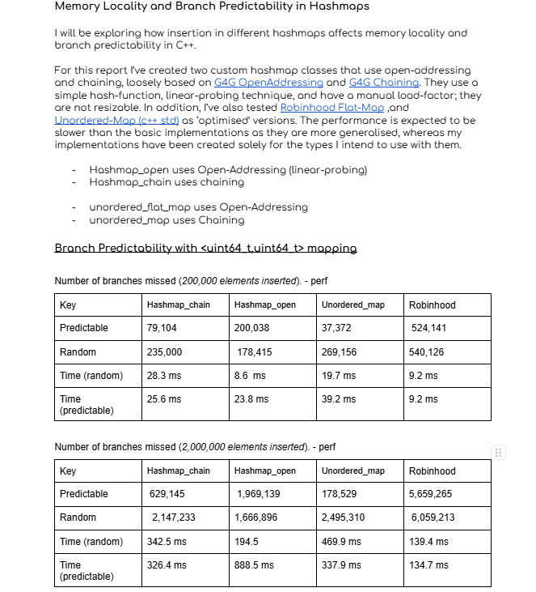
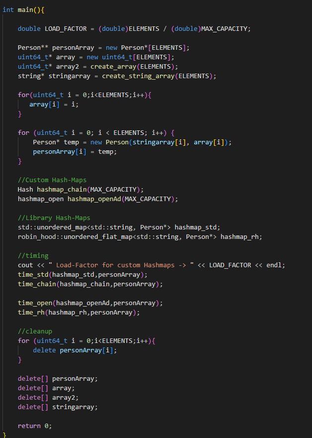
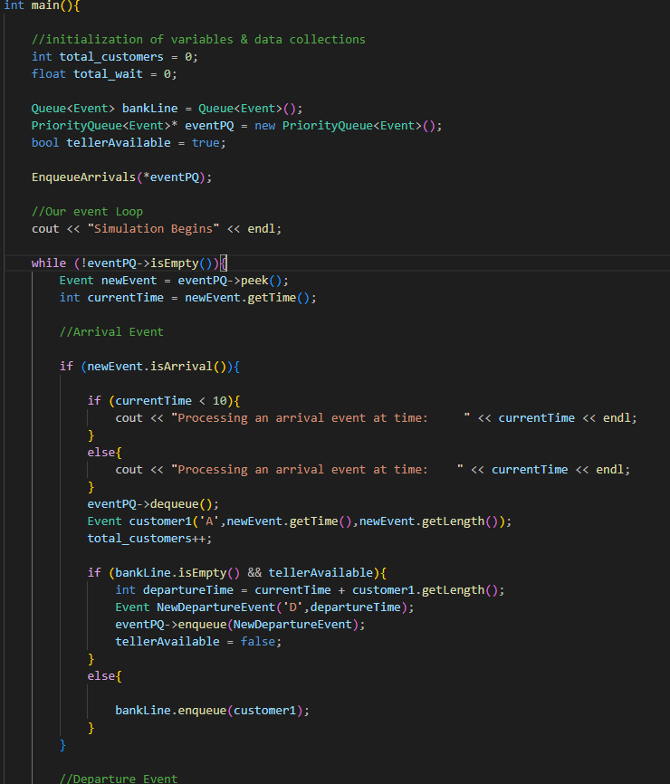
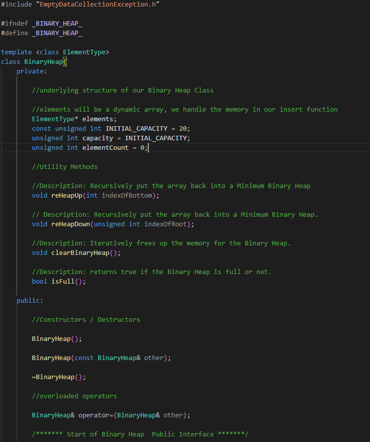

This project tested the efficieny of different hash-table implementations based on open-addressing and chaining. Perf was used to analyze performance
on differnt kinds, and sizes of arrays, and timing was done on various data types. Open-addressing resulted in faster results, and chaining was inefficient
due to memory locality issues.
Custom Implementations
Hashmap_open uses Open-Addressing (linear-probing)
Hashmap_chain uses chaining
Optimised Libraries Used
unordered_flat_map uses Open-Addressing
unordered_map uses Chaining


This project was based around designing a custom Queue, Binary Heap, and Dictionary to create a Bank Simulation Application.
Specifically, the application read through a unsorted .txt file of arrival and departure deadlines, matching them to the correct client, and managing the correct
order of arrivals and departures via a event loop to provide a seamless experience. Essentially, putting a priority-queue implementation in use.
The queue uses a double-headed linked-list as it's underlying structure to allow for easy insertion/deletion at both ends of the data structure. Resulting in a more
desirable time-complexity.